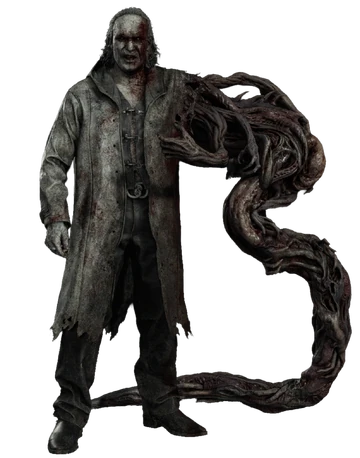

Resident Evil: Requiem
O terror nunca morre...
O terror nunca morre...
"Resident Evil: Requiem" é o mais recente capítulo da icônica série de jogos de terror. Desenvolvido pela Capcom, este título promete levar os jogadores a uma jornada aterrorizante através de Raccoon City, onde um surto viral transformou os habitantes em zumbis sedentos por sangue. Com gráficos impressionantes, jogabilidade intensa e uma narrativa envolvente, "Resident Evil: Requiem" é uma experiência imperdível para os fãs do gênero de terror.



A história acompanha dois protagonistas com motivações que se entrelaçam: Grace Ashcroft: Analista do FBI e filha de Alyssa Ashcroft (personagem de Resident Evil Outbreak). Ela viaja até o abandonado Hotel Wrenwood para investigar uma série de mortes misteriosas e buscar respostas sobre o assassinato de sua mãe, ocorrido oito anos antes no mesmo local. Leon S. Kennedy: O veterano agente da DSO é enviado ao local após o desaparecimento de um policial. Leon traz sua vasta experiência em bioterrorismo para enfrentar o novo surto, enquanto lida com as cicatrizes de seu passado em Raccoon City.
Lugares do jogo "Resident Evil: Requiem"

A cidade de Raccoon City é o cenário principal do jogo, onde ocorre a maior parte da ação.

Wrenwood é uma cidade vizinha a Raccoon City, que também é afetada pelo surto viral.
O Centro de Cuidados é um hospital onde os sobreviventes buscam refúgio e tratamento para suas feridas.

A Loja de Armas do Kendo é um local onde os jogadores podem encontrar armas e equipamentos para enfrentar os zumbis.
Confira o trailer oficial de "Resident Evil: Requiem" para ter um vislumbre do terror que aguarda os jogadores.